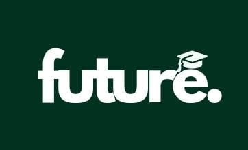

⬅ Voltar ao início
Teste Vocacional
Descubra qual é a melhor carreira para você!
Faculdades
Concursos
Teste Vocacional
Login
Responda ao nosso teste vocacional para descobrir suas aptidões profissionais
1. Você prefere trabalhar com...
Tecnologia
Ciências Humanas
Saúde
Artes
Engenharia
Administração
2. Você se considera uma pessoa...
Criativa
Organizada
Comunicativa
Prática
Líder
Analítica
3. O que mais te motiva?
Inovação
Estabilidade
Trabalhar com pessoas
Desafios
Impactar o mundo
Alta remuneração
4. Você prefere trabalhar em...
Escritório
Ao ar livre
Ambiente de laboratório
Locais criativos
Indústria
Ambiente corporativo
Ver Resultado
Seu Resultado